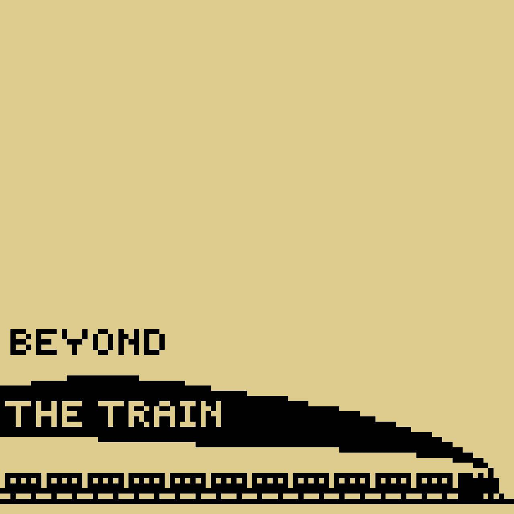

O GeeNine é um coletor cujo propósito é facilitar a logística reversa, que ainda é um assunto relativamente pouco conhecido. O GeeNine foi desenvolvido sobre um Arduino Mega, utilizando dois servomotores, um buzzer e um leitor RFID. Por ser um protótipo, em vez de celulares reais, utilizam-se cartões que os representam e que são identificados pelo leitor RFID.
Underground foi o primeiro nome de um projeto que surgiu na matéria de IC (Introdução à Computação), e que depois se tornou Beyond the Train. A ideia nasceu durante uma atividade em que devíamos criar um jogo no Bitsy, mas acabou evoluindo para uma proposta mais ousada: tirar o jogo do Bitsy, que era extremamente limitado, e levá-lo para a Godot, com novas mecânicas, nova jogabilidade — basicamente um novo jogo. Entretanto, por conflitos de ideias dentro do grupo, o projeto acabou sendo descontinuado (por enquanto)
